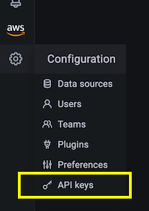

Using Terraform for Amazon Managed Grafana automation¶
Warning
This site is being merged into the broader Observability Best Practices content. Please head over there for the latest updates, plus prescriptive guidance on the use of AWS observability tools.
Warning
This site will be kept as-is until January 2023, when it will be decommissioned.
In this recipe we show you how use Terraform to automate Amazon Managed Grafana, for example to add datasources or dashboards consistently across a number of workspaces.
Note
This guide will take approximately 30 minutes to complete.
Prerequisites¶
- The AWS command line is installed and configured in your local environment.
- You have the Terraform command line installed in your local environment.
- You have an Amazon Managed Service for Prometheus workspace ready to use.
- You have an Amazon Managed Grafana workspace ready to use.
Set up Amazon Managed Grafana¶
In order for Terraform to authenticate against Grafana, we are using an API Key, which acts as a kind of password.
Info
The API key is an RFC 6750 HTTP Bearer header with a 51 character long alpha-numeric value authenticating the caller with every request against the Grafana API.
So, before we can set up the Terraform manifest, we first need to create an API key. You do this via the Grafana UI as follows.
First, select from the left-hand side menu in the Configuration section
the API keys menu item:

Now create a new API key, give it a name that makes sense for your task at
hand, assign it Admin role and set the duration time to, for example, one day:

Note
The API key is valid for a limited time, in AMG you can use values up to 30 days.
Once you hit the Add button you should see a pop-up dialog that contains the
API key:

Warning
This is the only time you will see the API key, so store it from here in a safe place, we will need it in the Terraform manifest later.
With this we've set up everything we need in Amazon Managed Grafana in order to use Terraform for automation, so let's move on to this step.
Automation with Terraform¶
Preparing Terraform¶
For Terraform to be able to interact with Grafana, we're using the official Grafana provider in version 1.13.3 or above.
In the following, we want to automate the creation of a data source, in our case we want to add a Prometheus data source, to be exact, an AMP workspace.
First, create a file called main.tf with the following content:
terraform {
required_providers {
grafana = {
source = "grafana/grafana"
version = ">= 1.13.3"
}
}
}
provider "grafana" {
url = "INSERT YOUR GRAFANA WORKSPACE URL HERE"
auth = "INSERT YOUR API KEY HERE"
}
resource "grafana_data_source" "prometheus" {
type = "prometheus"
name = "amp"
is_default = true
url = "INSERT YOUR AMP WORKSPACE URL HERE "
json_data {
http_method = "POST"
sigv4_auth = true
sigv4_auth_type = "workspace-iam-role"
sigv4_region = "eu-west-1"
}
}
In the Grafana provider section:
url… the Grafana workspace URL which looks something like the following:https://xxxxxxxx.grafana-workspace.eu-west-1.amazonaws.com.auth… the API key you have created in the previous step.
In the Prometheus resource section, insert the url which is the AMP
workspace URL in the form of
https://aps-workspaces.eu-west-1.amazonaws.com/workspaces/ws-xxxxxxxxx.
Note
If you're using Amazon Managed Grafana in a different region than the one
shown in the file, you will have to, in addition to above, also set the
sigv4_region to your region.
To wrap up the preparation phase, let's now initialize Terraform:
$ terraform init
Initializing the backend...
Initializing provider plugins...
- Finding grafana/grafana versions matching ">= 1.13.3"...
- Installing grafana/grafana v1.13.3...
- Installed grafana/grafana v1.13.3 (signed by a HashiCorp partner, key ID 570AA42029AE241A)
Partner and community providers are signed by their developers.
If you'd like to know more about provider signing, you can read about it here:
https://www.terraform.io/docs/cli/plugins/signing.html
Terraform has created a lock file .terraform.lock.hcl to record the provider
selections it made above. Include this file in your version control repository
so that Terraform can guarantee to make the same selections by default when
you run "terraform init" in the future.
Terraform has been successfully initialized!
You may now begin working with Terraform. Try running "terraform plan" to see
any changes that are required for your infrastructure. All Terraform commands
should now work.
If you ever set or change modules or backend configuration for Terraform,
rerun this command to reinitialize your working directory. If you forget, other
commands will detect it and remind you to do so if necessary.
With that, we're all set and can use Terraform to automate the data source creation as explained in the following.
Using Terraform¶
Usually, you would first have a look what Terraform's plan is, like so:
$ terraform plan
Terraform used the selected providers to generate the following execution plan.
Resource actions are indicated with the following symbols:
+ create
Terraform will perform the following actions:
# grafana_data_source.prometheus will be created
+ resource "grafana_data_source" "prometheus" {
+ access_mode = "proxy"
+ basic_auth_enabled = false
+ id = (known after apply)
+ is_default = true
+ name = "amp"
+ type = "prometheus"
+ url = "https://aps-workspaces.eu-west-1.amazonaws.com/workspaces/ws-xxxxxx/"
+ json_data {
+ http_method = "POST"
+ sigv4_auth = true
+ sigv4_auth_type = "workspace-iam-role"
+ sigv4_region = "eu-west-1"
}
}
Plan: 1 to add, 0 to change, 0 to destroy.
───────────────────────────────────────────────────────────────────────────────────────────────────────────────────────────────────────────────────────────────────────────
Note: You didn't use the -out option to save this plan, so Terraform can't guarantee to take exactly these actions if you run "terraform apply" now.
If you're happy with what you see there, you can apply the plan:
$ terraform apply
Terraform used the selected providers to generate the following execution plan.
Resource actions are indicated with the following symbols:
+ create
Terraform will perform the following actions:
# grafana_data_source.prometheus will be created
+ resource "grafana_data_source" "prometheus" {
+ access_mode = "proxy"
+ basic_auth_enabled = false
+ id = (known after apply)
+ is_default = true
+ name = "amp"
+ type = "prometheus"
+ url = "https://aps-workspaces.eu-west-1.amazonaws.com/workspaces/ws-xxxxxxxxx/"
+ json_data {
+ http_method = "POST"
+ sigv4_auth = true
+ sigv4_auth_type = "workspace-iam-role"
+ sigv4_region = "eu-west-1"
}
}
Plan: 1 to add, 0 to change, 0 to destroy.
Do you want to perform these actions?
Terraform will perform the actions described above.
Only 'yes' will be accepted to approve.
Enter a value: yes
grafana_data_source.prometheus: Creating...
grafana_data_source.prometheus: Creation complete after 1s [id=10]
Apply complete! Resources: 1 added, 0 changed, 0 destroyed.
When you now go to the data source list in Grafana you should see something like the following:

To verify if your newly created data source works, you can hit the blue Save &
test button at the bottom and you should see a Data source is working
confirmation message as a result here.
You can use Terraform also to automate other things, for example, the Grafana provider supports managing folders and dashboards.
Let's say you want to create a folder to organize your dashboards, for example:
resource "grafana_folder" "examplefolder" {
title = "devops"
}
Further, say you have a dashboard called example-dashboard.json, and you want
to create it in the folder from above, then you would use the following snippet:
resource "grafana_dashboard" "exampledashboard" {
folder = grafana_folder.examplefolder.id
config_json = file("example-dashboard.json")
}
Terraform is a powerful tool for automation and you can use it as shown here to manage your Grafana resources.
Note
Keep in mind, though, that the state in Terraform is, by default, managed locally. This means, if you plan to collaboratively work with Terraform, you need to pick one of the options available that allow you to share the state across a team.
Cleanup¶
Remove the Amazon Managed Grafana workspace by removing it from the console.